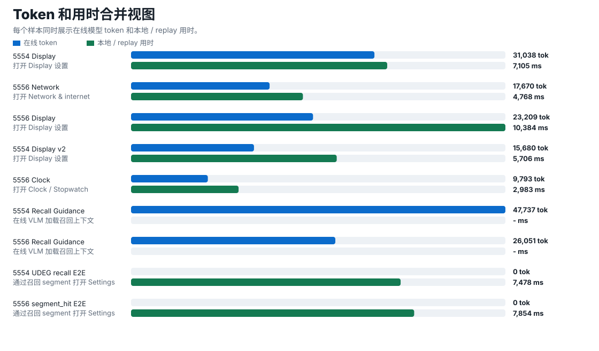
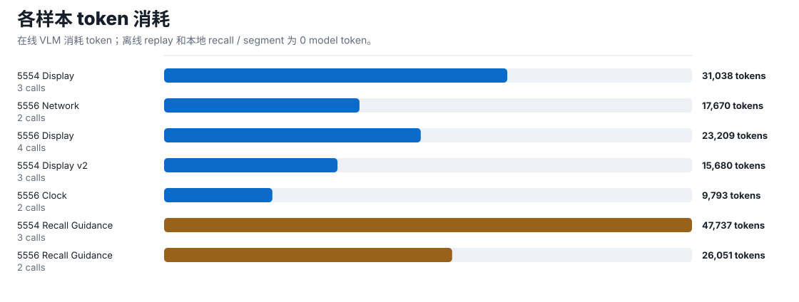
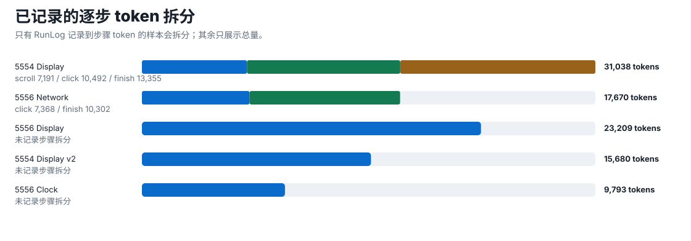
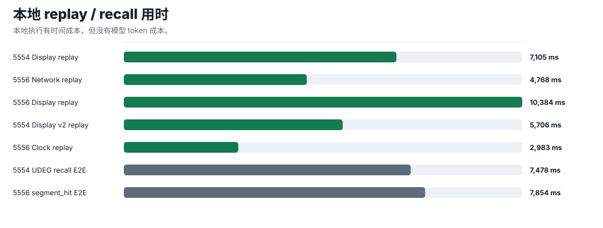
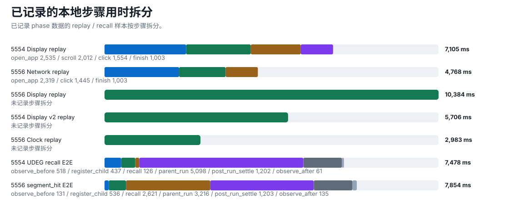

1. 方法更新
| 路径 | 发生什么 | 优势 | 成本 |
|---|---|---|---|
| 在线 VLM | 实时看屏幕和页面结构，一步一步选择操作，并生成 RunLog。 | 适合新任务、页面变化和需要判断的场景。 | 每一步都有模型 token 成本。 |
| 离线 Function replay | 把成功 RunLog 转成动作序列，下次直接本地执行。 | 重复执行稳定、可审计、无需模型。 | token 为 0；耗时来自本地执行和页面稳定。 |
| 召回 / segment | 先匹配当前页面，再找可复用 Function 或其中一段继续执行。 | 降低误命中；避免整条路径重跑；公共子路径可复用。 | 有本地检索耗时，但不消耗模型 token。 |
2. 效果对比
| 验证项 | 样本 | 结果 | Token | 耗时 |
|---|---|---|---|---|
| 在线 VLM | 5 个 Settings / Clock 任务，14 次 VLM 调用粗算 | 5/5 成功 | 97,390 总计；约 6,956 / 次调用 | 随页面和步骤变化 |
| 离线 Function replay | 5 个由成功 RunLog 转出的 Function | 5/5 成功 | 0 | 2,983 ms - 10,384 ms |
| UDEG 召回 / segment | 5554、5556 两台 emulator | 2/2 通过 | 0 | 7,478 ms / 7,854 ms 端到端 |
| 在线 VLM + 召回上下文 | 2 个任务，5 次 VLM 调用 | 2/2 成功加载召回上下文 | 73,788 总计；约 14,758 / 次调用 | 仍然是在线模型路径 |
召回上下文模式不是省 token 路径。它把候选 Function / segment 信息提供给在线 VLM，所以会增加 prompt；真正省 token 的是显式执行离线 Function。
3. Token + 用时合并图
每个样本的在线 token 和本地耗时

蓝色是在线 VLM token，绿色是本地 replay / recall 用时。离线 Function 和本地召回不调模型，所以 token 为 0；但仍然有打开应用、页面稳定、点击和召回检索的时间成本。
完整步骤明细：每一步 token 和用时
表里“未记录”不是 token 为 0，而是当前 RunLog / source note 没有写到这一层。已明确记录的本地 replay、UDEG recall / segment 步骤均展示了逐步用时；已明确记录的在线 VLM 步骤展示了逐步 token。
查看辅助拆分图
按样本 token

逐步 token 拆分

按样本用时

逐步用时拆分

图和步骤表由
scripts/generate_guiagent_cost_charts.py 生成；后续更新 docs/omniflow/reports/guiagent-cost-data.json 后重跑脚本即可刷新。4. 为什么 token 高？
| 原因 | 统计证据 | 解释 | 降成本方向 |
|---|---|---|---|
| 每步都带截图 | 1080×2400 图约 2,550 image tokens；1080×1920 图约 2,040 image tokens | 截图是固定大头，但不是唯一大头。 | 页面不变的 retry 不重发图；能用 XML 判断时少发图。 |
| 文本上下文很大 | 5554 Display 首步 7,191 token；扣掉一张图后仍约 4.6k - 5.1k | 剩下主要是系统规则、工具定义、当前页面元素和输出要求。 | 压缩系统规则；只保留可操作节点；裁剪工具定义。 |
| 历史逐步变大 | 5554 Display：7,191 → 10,492 → 13,355 | 后续步骤带上之前的操作、结果和页面变化。 | 历史做摘要；只保留关键事实和最后一步反馈。 |
| finish 也走完整 VLM | finish 步：13,355 / 10,302 token | 完成判断仍发送完整上下文，不是本地轻量判断。 | 先用本地标题/文本校验，命中后直接 finish。 |
| 召回上下文增加输入 | 带召回约 14,758 / 次调用，高于无召回粗均值 6,956 / 次调用 | 候选 Function、segment 和步骤摘要都进入 prompt。 | 只给 Top 1-2；只给剩余步骤；强命中直接 replay。 |
| 重复任务还走在线 | 同类任务 replay token = 0；在线每任务平均 19,478 token | 第一次探索有成本，重复执行应该复用。 | 成功 RunLog 自动建议保存，下次优先 recall + guard + replay。 |
一句话：第一步贵在“图 + 规则 + 页面证据”，后面更贵在“历史增长”，带召回更贵在“候选路径文本”。
5. 每一个地方的 token 消耗
| 位置 | 精确 token | 怎么算出来的 | 结论 |
|---|---|---|---|
| 无召回在线 VLM 总消耗 | 97,390 | 5 个成功在线任务的 RunLog token total 相加 | 平均每个任务 19,478 token；粗算每次 VLM 调用 6,956 token。 |
| 带召回上下文在线 VLM 总消耗 | 73,788 | 5554 47,737 + 5556 26,051 | 粗算每次 VLM 调用 14,758 token，比无召回在线调用明显更高。 |
| 离线 Function replay | 0 | 执行时不调模型，记录为 model-free 路径 | 重复任务最应该走这里。 |
| UDEG 召回 / segment 查找 | 0 | 本地页面匹配和 Function 排序，不请求模型 | 有时间成本，但没有 token 成本。 |
| 人工接管记录 | 0 | 记录 Accessibility 事件，不请求模型 | 可以沉淀成 RunLog，不增加 token。 |
| 具体 VLM 调用位置 | 精确 token | 图片估算 | 扣掉图片后的剩余 | 剩余主要是什么 |
|---|---|---|---|---|
| 5554 Display · scroll | 7,191 | 约 2,040 - 2,550 | 约 4,641 - 5,151 | 系统规则、工具定义、当前页面证据、模型输出。 |
| 5554 Display · click | 10,492 | 约 2,040 - 2,550 | 约 7,942 - 8,452 | 增加了上一步历史、操作结果和新的页面证据。 |
| 5554 Display · finish | 13,355 | 约 2,040 - 2,550 | 约 10,805 - 11,315 | 历史最多；完成判断仍走完整 VLM。 |
| 5556 Network · click | 7,368 | 约 2,040 - 2,550 | 约 4,818 - 5,328 | 首步在线判断的基础成本。 |
| 5556 Network · finish | 10,302 | 约 2,040 - 2,550 | 约 7,752 - 8,262 | 带历史的完成判断成本。 |
只有总 token 是精确值；图片是按常见手机截图尺寸估算，剩余值是“总 token - 图片估算”。现有日志还不能把剩余部分精确拆成系统规则、页面证据、工具定义、历史和输出。
6. 样本 token 与耗时明细
| 任务 | 在线 token | 已知步骤 token | replay token | replay 耗时 |
|---|---|---|---|---|
| 5554 打开 Display 设置 | 31,038 | scroll 7,191；click 10,492；finish 13,355 | 0 | 7,105 ms |
| 5556 打开 Network & internet | 17,670 | click 7,368；finish 10,302 | 0 | 4,768 ms |
| 5556 打开 Display 设置 | 23,209 | 记录了总量；未拆到每步 | 0 | 10,384 ms |
| 5554 打开 Display 设置 | 15,680 | 记录了总量；未拆到每步 | 0 | 5,706 ms |
| 5556 打开 Clock / Stopwatch | 9,793 | 记录了总量；未拆到每步 | 0 | 2,983 ms |
7. 召回和 segment 的优势
召回
- 先匹配当前页面，再找可复用 Function，降低误触发。
- 把历史成功经验给模型，但默认不静默执行。
- 强命中时可跳过在线 VLM，直接走 replay。
Segment
- 可以从 Function 中间继续执行，不必整条重跑。
- 公共入口段能被多个任务复用。
- 失败时能定位到具体步骤，方便更新。
8. 后续统计设计
| 新增统计项 | 目的 | 汇报里怎么用 |
|---|---|---|
| 图片宽高、图片数量、估算 image tokens | 拆出截图成本 | 显示图片约占输入多少。 |
| 系统规则 / 工具定义 baseline | 识别固定成本 | 看 prompt 压缩后下降多少。 |
| 页面证据 token | 识别页面文本是否过长 | 对比全量节点和精简节点。 |
| 历史 token | 量化多步任务越跑越贵 | 决定何时摘要或截断。 |
| 召回上下文 token | 量化 recall guidance 额外成本 | 决定给 Top 几个候选。 |
| 本地完成校验命中率 | 减少昂贵 finish 调用 | 报告少问模型多少次、省多少 token。 |
9. Claim 边界
| 可以 claim | 不要 claim |
|---|---|
| 已记录样本里，成功 RunLog 可以转 Function，replay 0 token 成功。 | 不要说所有 AndroidWorld 或所有 App 都 100% 成功。 |
| 召回 / segment 能减少重复在线探索。 | 不要说 recall guidance 一定降低 live VLM token。 |
| 图片是重要成本，但不是唯一原因。 | 不要把 base64 长度当图片 token。 |